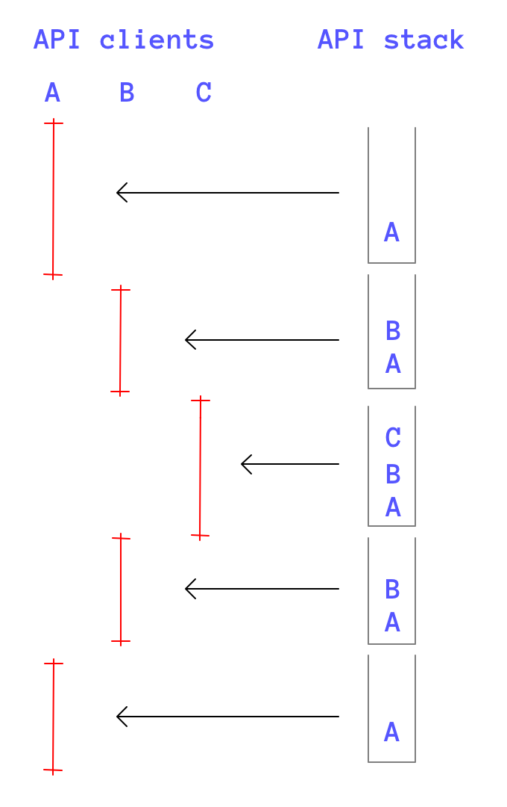

Communication Manager
The Communication Manager is a very powerful new service introduced in API v3.1.
In the previous versions of the API add-ons could be called by Archicad only. There were two ways to do that. The add-on could be called because of a direct user interaction, or there was a need to post a notification to it. It was not possible to call one add-on from another.
From API v3.1 add-ons can call each other.
All of the communication manager functions begin with the ACAPI_Command_ prefix. They are as follows:
ACAPI_Command_Test
ACAPI_Command_Call
ACAPI_Command_ExternalCallACAPI_Command_CallFromEventLoop

There are some functions to provide easy and controlled mechanism for parameter passing. They are:
APIAny_InitMDCLParameterListID
APIAny_GetMDCLParameterNumID
APIAny_GetMDCLParameterID
APIAny_AddMDCLParameterID
APIAny_ChangeMDCLParameterID
APIAny_FreeMDCLParameterListID
Entry points
What is an entry point of an add-on? It is a function or service which can be called from another add-on with the support of the Communication Manager.
The entry points are interface independent. It means that there isn't any relationship between the commands put into the Archicad menu structure and the entry points. The first set is controlled by the ACAPI_Register_Menu or ACAPI_Register_FileType and the like, the second type entry points are given by ACAPI_Register_SupportedService.
Registration
An add-on can have as many entry points as it wants, and each of them has to be registered in the RegisterInterface function of your add-on with ACAPI_Register_SupportedService. This function tells Archicad that the add-on can be called by another. The parameters of this function are the following:
- the identifier of the entry point,
- the version of the entry point,
Refer to the function description for more details.
Later in the Initialize function the add-on has to register callback function to handle the different supported commands. The ACAPI_Install_ModulCommandHandler function's parameters identify the command (with its ID and version number), and the last parameter supplies the module command handler callback function. This callback function then receives the parameters, may optionally pass back its results in a separate pointer, and is also informed whether it should run in silent mode.
Entry point identification
An entry point is identified by the following two components:
- an add-on identifier. For this purposes the API uses the 'MDID' resource. Simply put the ID of the target add-on into an API_ModulID structure to identify it.
- an entry point identifier. This should be the same what the target add-on used as the first parameter of the ACAPI_Register_SupportedService.
- the version of the entry point.
This means that entry point IDs must be unique in the world of an add-on. Different add-ons may have the same entry point IDs, but locally an add-on is not allowed to specify the same ID more than once.
On the caller add-ons side, it may check for the existence of the necessary entry points of the target add-on in its own RegisterInterface function, with ACAPI_Register_RequiredService.
Version control
The last issue is version control. The caller add-on must specify the required version of the entry point also. The API assumes backward compatibility. When an add-on tests for an entry point's availability, the following cases may occur (assuming the identification was successful):
- the entry point version is less than the requested one. In this case an error is returned.
- the entry point version is greater or equal with the requested one. The API returns successfully, as it assumes backward compatibility.
When you assign a version number to an entry point, you must adhere to the following rules:
- when backward compatibility can be assured, simply increase the version number.
- when the compatibility cannot be assured, change the entry point identifier.
Note that the most general cases where the compatibility issues are important are:
- there are changes in the interface (the parameters, which the caller can pass, have to be modified)
- there are changes in the algorithm (the output will differ on the same parameters passed)
In either cases keep the compatibility, if possible. Upon a call of an entry point, the Communication Manager first identifies the command. If it is available, it checks the entry point version. If there isn't any version problem, it calls the entry point by passing the required version number. Use this data to ensure the same environment and behavior.
Control of execution
It is very important to understand what happens in the background when the API calls an add-on.
In general the API allocates a unique environment to each executed add-on. Normally only one add-on is executed by the API, only one add-on is in one of its callback functions. However there are cases when there are more add-ons in the call stack.
- when there is a need to post a notification to certain add-ons.
- the add-on has the right to call another add-on's functionality.
In these cases more add-ons are executed at the same time, they are all in their notification or module command handler functions.
Note, that this is not a real multiprocessing architecture.
The API maintains a call stack all the time, and only the top-most add-on has the right to call the API services. This is the add-on whose environment is the active one. Once the top-most add-on has returned from its callback function, the API takes the next add-on on the stack, and makes its environment to be the active one.
So, the structure is nested, instead of being parallel.
The figure below tries to explain the system. The user has called a command which is implemented in the add-on A. add-on A calls a function of add-on B. It performs an operation which results to post a notification to add-on C.

Figure #1: the API call stack and client environments
The vertical lines show which environment is the active one. On the right side the call stack maintained by the API is shown.
On Figure #2 you can see how the CommunicationManager and CommunicationClient example projects communicate to each other.
Figure #2: communication architectures
On the left side of the picture the normal situation is shown.
Client A (which is the CommunicationManager example project) wants to call the entry point 'CMD1' (command 1) of client B (the CommunicationClient example project). It calls the ACAPI_Command_Call function with the necessary IDs. The API loads the add-on B, and calls its module command handler function, registered for the 'CMD1' command. When B has returned, the control goes back to the API, into the ACAPI_Command_Call function. It switches the environment back to the one owned by A, and returns. Client A gets the control and can continue working.
This system is quite simple, however sometimes it is not strong enough. The ACAPI_Command_Call function is a very robust one, with a lot of overhead. First, it has to decide whether the addressed add-on is installed. Then it has to be loaded into the memory and initialized; of course just if it is was not loaded before. The caller add-on may want to pass some parameters too, the method to do that also has a strong overhead (the details are explained later in this paper).
On the right side of the picture a more complex architecture is shown, where the two add-ons can call each other directly. For this purpose client B has implemented two special entry points:
'BEGB'is to setup a binary link. Actually it just fills up a function table, or returns a pointer to a class with virtual functions initialized. The most important, that it calls the ACAPI_KeepInMemory function to force the API to keep it in the memory. When the ACAPI_Command_Call function returns to client A, he gets the necessary function pointers, and as client B is in the memory, they are valid, they can be called. From this point, client A is also allowed to pass function pointers to client B. So, an environment is set up where two add-ons can call each other directly, with the standard C/C++ calls, without the assistance of the Communication Manager.'ENDB'is just to dispose the binary link. Actually the only task it has to do is to call the ACAPI_KeepInMemory function to sign that it can be unloaded.
What is very important to know is, that in this architecture client B is running under the API environment of client A. He can call any of the API services, but the API handles client A as the active one. The API will process these request in a way, as they would be called by client A. This critical session is shown by a zigzag type line on the picture.
 Please note that from Archicad 10 it is a possible to make an add-on command execute in an external Archicad instance to perform operation on a different project file. For more details refer to the ACAPI_Command_ExternalCall function.
Please note that from Archicad 10 it is a possible to make an add-on command execute in an external Archicad instance to perform operation on a different project file. For more details refer to the ACAPI_Command_ExternalCall function.
 Please note that from Archicad 19 you can execute add-on command forced from main event loop using ACAPI_Command_CallFromEventLoop function.
Please note that from Archicad 19 you can execute add-on command forced from main event loop using ACAPI_Command_CallFromEventLoop function.
Parameter passing
Parameters should be passed in the params argument to the ACAPI_Command_Call function. This handle -whose internal format is not public- is owned by the API. The content is not checked by the API, it just simply passed to the called entry point.
The parameters should be listed in the public header file of the add-on. Each parameter is identified by its name. Each parameter has a value type, which can be either a string, integer or float type. The API does not check the passed parameters, it merely passes those onto the called add-on. Consistency must be validated by the called add-on's entry function.
The workflow is:
- the caller add-on must initialize a parameter list with the APIAny_InitMDCLParameterListID function,
- the required parameters can be appended to this list with the APIAny_AddMDCLParameterID function,
- the called add-on can explode the passed parameters with the APIAny_GetMDCLParameterNumID and APIAny_GetMDCLParameterID functions,
- parameters may be modified with the APIAny_ChangeMDCLParameterID function.
- the parameter list must be disposed by the caller with the help of APIAny_FreeMDCLParameterListID function.
It is very important, that the parameters must be relative to the factory default parameters of the called add-on. The called add-on first must set up its factory default parameters, then while retrieving the passed parameters one by one, the defaults should be modified. If no parameters were passed (params == nullptr) the factory default parameters should be used without any modification. Another important note is that the parameters must be interpreted in the same order as they have been passed.
The above rules ensure that the execution of the entry points will not be context sensitive. No matter what the current defaults are (saved into the preferences), parameters are interpreted based on the factory defaults. It doesn't matter that some parameters are not passed to the client, as they have defaults.
Let's take an example.
The DXF/DWG add-on exports an entry point the open an AutoCAD drawing. Its options dialog also has a Default button to set and use the factory default parameters. The add-on emulates the behavior of this dialog while interpreting the passed parameters.
Interface control
The caller add-on can disable all interface elements of the called add-on with the silentMode parameter.
If this parameter is set to true, the called add-on is not allowed to open its dialogs and alerts. In the case it is false the option dialog must appear; of course after processing the passed parameters. The user is allowed to modify any parameter. In the case the modifications may have an effect on the passed parameters, use the APIAny_ChangeMDCLParameterID function to allow the caller add-on to track the changes.
Return values
There are two ways to return parameters to the caller.
The default option is to use the return value of the ACAPI_Command_Call call. The value returned by this function is the value returned by the client's module command handler function.
The other way is to use the resultData parameter. This is a simple pointer, which can be used for any purpose. The specification must be given by the called add-on.
Documentation
It is absolutely necessary to provide developer documentation for each add-on which publishes its interface. This document should give details what the functionality of the entry point is, what parameters can be passed, how they are interpreted and what return vales are provided.
By default put this document into the same folder where your add-on is installed.